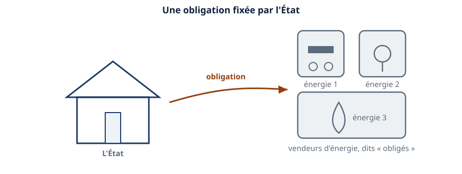
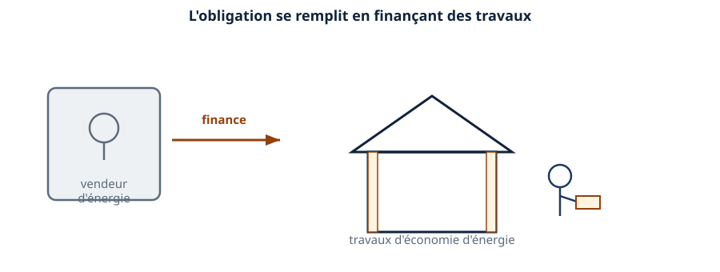
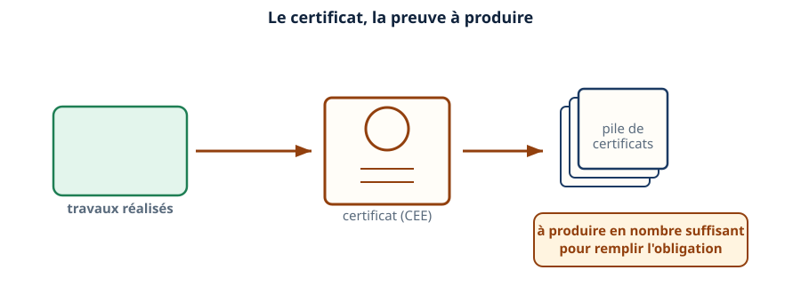
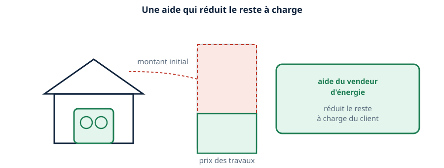
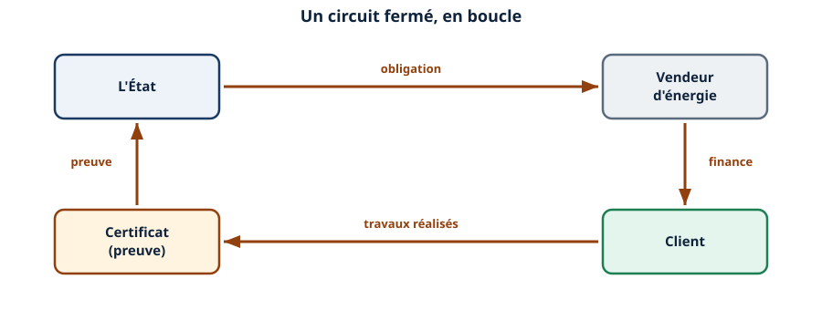
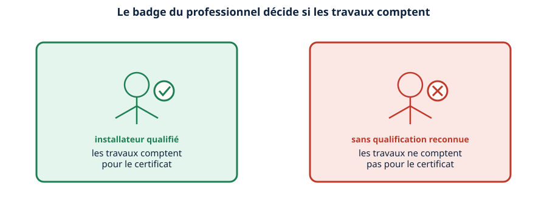
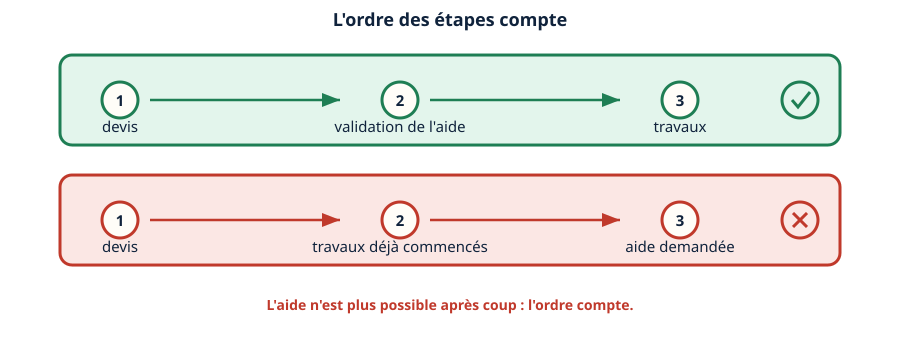
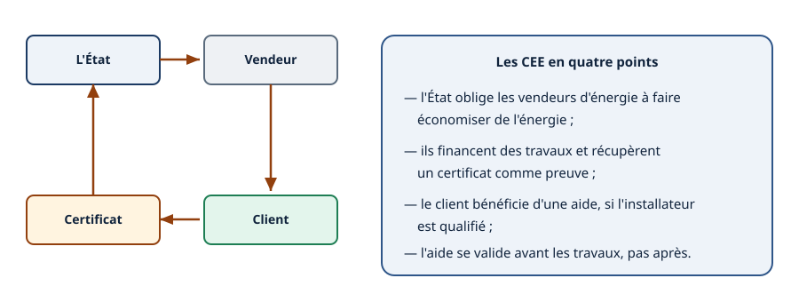

Mini-station commentée · 8 écrans et 4 questions · environ 10 minutes
Objectif
À la fin de la station, vous savez pourquoi les vendeurs d'énergie financent des travaux, comment le certificat prouve leur obligation remplie, et ce que ça change concrètement pour un client qui installe une pompe à chaleur avec vous.
Chaque écran peut être expliqué à voix haute : le bouton « Écouter » commente ce que vous voyez. Rien n'est dit qui ne soit aussi écrit.
1 / 12
Écran 1 sur 8
Le mécanisme : une obligation aux vendeurs d'énergie
L'État impose aux vendeurs d'énergie — électricité, gaz, carburants — une obligation d'économies d'énergie. On les appelle les obligés.
Ce ne sont pas les clients qui sont obligés de faire des travaux : c'est le vendeur d'énergie qui doit prouver qu'il a contribué à en faire réaliser, à l'échelle du pays.

Une obligation fixée par l'État aux vendeurs d'énergie.
Écran 2 sur 8
Remplir l'obligation : financer des travaux
Pour remplir son obligation, un vendeur d'énergie finance des travaux d'économie d'énergie chez ses clients — isolation, changement de chauffage, ventilation.
C'est ce financement qui devient, pour vous et vos clients, une aide sur le coût des travaux.

L'obligation se remplit en finançant des travaux, pas en payant une taxe.
Écran 3 sur 8
Le certificat, preuve de l'obligation remplie
Chaque chantier financé donne lieu à un certificat d'économie d'énergie (CEE) : la preuve écrite que des travaux ont bien été réalisés.
Le vendeur d'énergie doit réunir suffisamment de certificats pour prouver, à l'État, qu'il a rempli son obligation. C'est ce qui donne son nom au dispositif.

Le certificat, la trace écrite des travaux réalisés.
Écran 4 sur 8
Ce que ça change pour le client
Pour votre client, le résultat concret est une aide qui réduit le reste à charge sur le prix des travaux — par exemple l'installation d'une pompe à chaleur.
Le montant exact de cette aide dépend du dossier, de l'énergie remplacée et du fournisseur choisi : il n'y a pas de chiffre unique à retenir, il se vérifie devis par devis.

Une aide qui réduit le reste à charge — le montant se vérifie devis par devis.
Écran 5 sur 8
Le circuit concret : qui paie qui
Le circuit se referme en boucle : l'État fixe l'obligation, le vendeur d'énergie finance, le client fait réaliser les travaux, le certificat revient prouver que l'obligation est remplie.
Comprendre cette boucle aide à comprendre pourquoi l'aide existe : ce n'est pas un cadeau, c'est la contrepartie d'une obligation légale.

Une boucle complète — l'aide est la contrepartie d'une obligation légale.
Écran 6 sur 8
Le rôle de l'installateur qualifié
Pour que les travaux comptent dans le dispositif, ils doivent en général être réalisés par un professionnel qualifié — une reconnaissance dont le détail fait l'objet d'une autre station, « RGE & QualiPAC », en préparation.
Sans cette qualification, le même chantier, bien réalisé, peut ne pas ouvrir droit à l'aide.

Le même chantier, deux issues selon le badge du professionnel.
Écran 7 sur 8
Le réflexe : valider l'aide avant de démarrer
L'ordre des étapes compte : devis, puis validation de l'aide, et seulement ensuite travaux. Démarrer le chantier avant d'avoir fait valider l'aide peut la faire perdre définitivement.
C'est un réflexe à transmettre au client dès le premier rendez-vous, avant de signer quoi que ce soit.

L'ordre compte : l'aide se valide avant les travaux, jamais après.
Écran 8 sur 8
Bilan et le réflexe
L'État impose une obligation d'économies d'énergie aux vendeurs d'énergie.
Ils la remplissent en finançant des travaux, contre un certificat comme preuve.
Le client bénéficie d'une aide qui réduit le reste à charge — montant à vérifier devis par devis.
Les travaux doivent être réalisés par un professionnel qualifié pour ouvrir droit à l'aide.
Le réflexe : faire valider l'aide avant de démarrer les travaux, jamais après.

Une obligation qui se transforme en aide sur vos chantiers.
Question 1 sur 4
Qui est légalement « obligé » dans le dispositif CEE ?
Rappel de l'écran 1 — les vendeurs d'énergie, pas les clients.
Question 2 sur 4
Que prouve un certificat d'économie d'énergie ?
Rappel de l'écran 3 — la trace écrite des travaux réalisés.
Question 3 sur 4
Pourquoi la qualification du professionnel compte-t-elle ?
Rappel de l'écran 6 — le même chantier, deux issues différentes.
Question 4 sur 4
Quand valider l'aide, par rapport aux travaux ?
Rappel de l'écran 7 — l'ordre compte, avant, jamais après.
Les correspondances de la station
Le DPE (même sous-ligne)
— un DPE défavorable révèle souvent les travaux à financer.
RGE & QualiPAC (sous-ligne Certifications, en préparation)
— les aides exigent un installateur qualifié.
La première correspondance est ouverte : le lien fonctionne. La seconde
est en préparation sur le plan du réseau.